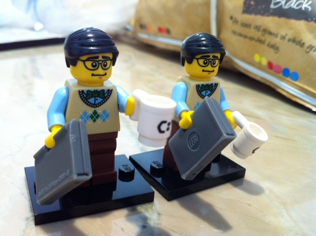
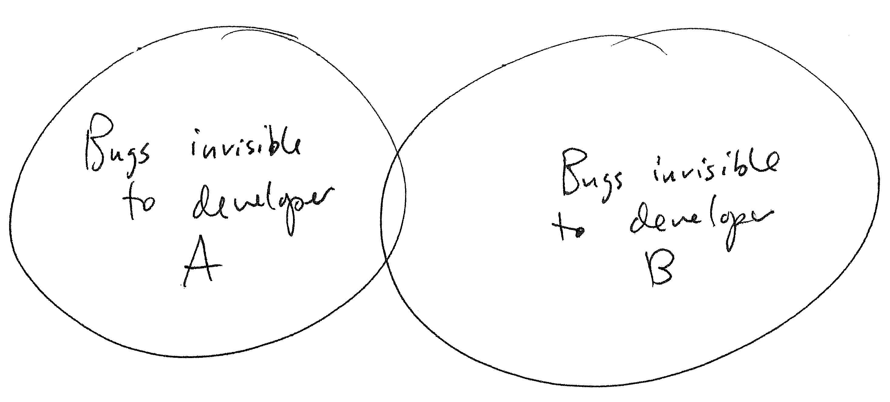

Triangles are my favorite shape. Three points where two lines meet.
Toe to toe, back to back, let's go, my love, it's very late.
PAIRING AND FEEDBACK
Pairing is a valuable tool and "must do" necessity for any software developer. It has wide benefits in team collaboration and the sharing of knowledge but also importantly it's essential for project progression in commercial terms.
-
What was it like to pair with others to solve challenges?
Good. Really good. While it can be a real mixed bag of lollies (I like lollies) my main point is that it's really great for contextualizing our learning - the volume of learning can be be super effective when applied and its of huge benefit to get in there, roll your sleeves up and code. At the same time I've felt totally exposed and vulnerable in feeling I don't know enough or am not contributing effectively enough for various reasons around lack of knowledge and/or confidence. It's refreshing to work with other humans for a change and feel like your extending something from a basic start point to a working, functional end point, no mater how arbitrary the concept or challenge is. At this stage I'd call myself a terrible navigator and I'm currently more comfortable driving as I wrap my head around the code and what it's doing. I think the biggest awareness that I can take away from my pairing sessions to date would be the act of regularly checking in with my pair and communicating effectively. Pairing to me is about engagement and creating a positive working environment, regardless of how frustrating the code can be at times.
-
Was something particularly fun or rewarding?
Absolutely yes. I had a pairing session where we were jammed with rspec errors but then suddenly the code worked and it was like fairy dust had been sprinkled in the room and we'd hit a high.
-
Was something frustrating and difficult for you?
The biggest frustration is really with myself alone. I seem to be processing at a much slower rate than others who I've paired with. I hope this improves in time and I think the answer here is really to practice coding more. Less reading, more doing. Code code code and fingers crossed I'll be more technically literate and confident.
-
How did you feel when you read your feedback? Was the feedback you received helpful to your learning?
I'm pretty pleased with my feedback. I think it's all valid and I agree with it all especially points relating to my syntax (I know this is an area for improvement).
-
Based on the feedback you've received, what are you going to do to improve next time you pair?
I think it's really important to identify driver/navgator roles and stick to them as best as possible until one of us hits a wall. I think also not being afraid to say "I'm not sure how to do this but I'm going to spend a few minutes researching it" while at the same time checking in with your pair to see how they would tackle the problem. I would like to make all my pairs feel 100% valued, respected and really dirven and motivated and proud of their work so moving forward I'm really conscious of this. I would also really like to be able to contribute better technically so a bit of background reading, planning before the pair session (if only in phase 0 while I get myself up to speed with the basics) would go a long way and I'd hope it to be a more succinct power session where I can hopefully feel more confident as a navigator.
-
How was it to write feedback? What was most difficult for you when writing feedback for your pair?
So far all of the pairing sessions I've had have been with amazing technically competent pairs. Because of this I find it super easy to provide honest, positive feedback. All the good bits. The constructive stuff I find a little more challenging but that's really just because I think everyone so far has been really great and technically competent.
-
Overall, what do you think of using pairing and feedback to guide your learning?
Being hands on in pairing is a great way to learn and a refreshing alternative to flying solo. You're in a team environment where you work together to find a solution and the "finding" part is just as important as the end result in the way that pairing allows you to learn or teach with your pair. Overall I think pairing and feedback is beneficial to guiding one's learning.
